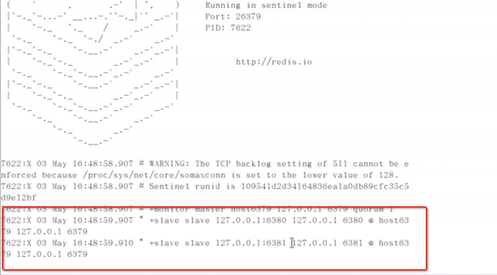

<!DOCTYPE html>


<html lang="en" >


<head>
  <meta charset="utf-8" />
    
  <meta name="viewport" content="width=device-width, initial-scale=1, maximum-scale=1" />
  <title>
    redis系列-夯实基础面试相关 |  孙云龙的技术博客
  </title>
  <meta name="generator" content="hexo-theme-yilia-plus">
  
  <link rel="shortcut icon" href="/favicon.ico" />
  
  <link rel="stylesheet" href="/dist/main.css">
  <link rel="stylesheet" href="/css/custom.css">
  
  <script src="https://cdn.jsdelivr.net/npm/pace-js@1.0.2/pace.min.js"></script>
  
  

  

<link rel="alternate" href="/atom.xml" title="孙云龙的技术博客" type="application/atom+xml">
</head>

</html>

<body>
  <div id="app">
    <main class="content on">
      <section class="outer">
  <article id="blog-redis系列-夯实基础面试相关" class="article article-type-blog" itemscope
  itemprop="blogPost" data-scroll-reveal>

  <div class="article-inner">
    
    <header class="article-header">
       
<h1 class="article-title sea-center" style="border-left:0" itemprop="name">
  redis系列-夯实基础面试相关
</h1>
 

    </header>
    

    
    <div class="article-meta">
      <a href="/2020/04/05/redis系列-夯实基础面试相关/" class="article-date">
  <time datetime="2020-04-05T10:51:36.000Z" itemprop="datePublished">2020-04-05</time>
</a>
      
  <div class="article-category">
    <a class="article-category-link" href="/categories/redis/">redis</a>
  </div>

      
      
<div class="word_count">
    <span class="post-time">
        <span class="post-meta-item-icon">
            <i class="ri-quill-pen-line"></i>
            <span class="post-meta-item-text"> Word count:</span>
            <span class="post-count">5.3k</span>
        </span>
    </span>

    <span class="post-time">
        &nbsp; | &nbsp;
        <span class="post-meta-item-icon">
            <i class="ri-book-open-line"></i>
            <span class="post-meta-item-text"> Reading time≈</span>
            <span class="post-count">18 min</span>
        </span>
    </span>
</div>

      
    </div>
    

    
    
    <div class="tocbot"></div>


    

    
    <div class="article-entry" itemprop="articleBody">
      
      

      
      <h3 id="最近看了很多redis相关的东西，做一点总结，redis涉及太多，本站支持在首页搜索关键字，看是否可以搜索到你想要的"><a href="#最近看了很多redis相关的东西，做一点总结，redis涉及太多，本站支持在首页搜索关键字，看是否可以搜索到你想要的" class="headerlink" title="最近看了很多redis相关的东西，做一点总结，redis涉及太多，本站支持在首页搜索关键字，看是否可以搜索到你想要的"></a>最近看了很多redis相关的东西，做一点总结，redis涉及太多，本站支持在首页搜索关键字，看是否可以搜索到你想要的</h3><h3 id="1、使用Redis有哪些好处？"><a href="#1、使用Redis有哪些好处？" class="headerlink" title="1、使用Redis有哪些好处？"></a>1、使用Redis有哪些好处？</h3><ol>
<li>基于内存的非关系型数据库，读取速度快</li>
<li>支持多种数据结构，</li>
<li>数据持久化</li>
<li>支持事务</li>
<li>支持主从复制</li>
</ol>
<h3 id="2、缺点："><a href="#2、缺点：" class="headerlink" title="2、缺点："></a>2、缺点：</h3><ol>
<li>容易受到物理内存的限制</li>
<li>不具备自动容错和恢复功能：主机从机宕机都会导致前端部分读写请求失败，需要等待机器重启或者手动切换前端IP才能恢复</li>
<li>主机宕机，宕机前有部分数据未能及时同步到从机，切换IP后还会引入数据不一致的问题，降低了系统的可用性</li>
<li>Redis较难支持在线扩容，在集群容量达到上限时在线扩容会变得很复杂，为避免这一问题，运维人员在系统上线时必须确保有足够的空间，这对资源造成了很大的浪费</li>
</ol>
<h3 id="3、Redis相比Memcached有哪些优势？"><a href="#3、Redis相比Memcached有哪些优势？" class="headerlink" title="3、Redis相比Memcached有哪些优势？"></a>3、Redis相比Memcached有哪些优势？</h3><ol>
<li>Mencache把数据全部存于内存之中，不具备数据持久化</li>
<li>Memcached数据结构单一</li>
</ol>
<h3 id="4、Redis常见性能问题和解决方案"><a href="#4、Redis常见性能问题和解决方案" class="headerlink" title="4、Redis常见性能问题和解决方案"></a>4、Redis常见性能问题和解决方案</h3><ol>
<li>Master 最好不要做任何持久化工作，包括内存快照和 AOF 日志文件，特别是不要启用内存快照做持久化。</li>
<li>如果数据比较关键，某个 Slave 开启 AOF 备份数据，策略为每秒同步一次。</li>
<li>为了主从复制的速度和连接的稳定性，Slave 和 Master 最好在同一个局域网内。</li>
<li>尽量避免在压力较大的主库上增加从库。</li>
<li>Master 调用 BGREWRITEAOF 重写 AOF 文件，AOF 在重写的时候会占大量的 CPU 和内存资源，导致服务 load 过高，出现短暂服务暂停现象。</li>
<li>为了 Master 的稳定性，主从复制不要用图状结构，用单向链表结构更稳定，即主从关系为：Master&lt;–Slave1&lt;–Slave2&lt;–Slave3…，这样的结构也方便解决单点故障问题，实现 Slave 对 Master 的替换，也即，如果 Master 挂了，可以立马启用 Slave1 做 Master，其他不变。</li>
</ol>
<h3 id="5、MySQL里有2000w数据，Redis中只存20w的数据，如何保证Redis中的数据都是热点数据？"><a href="#5、MySQL里有2000w数据，Redis中只存20w的数据，如何保证Redis中的数据都是热点数据？" class="headerlink" title="5、MySQL里有2000w数据，Redis中只存20w的数据，如何保证Redis中的数据都是热点数据？"></a>5、MySQL里有2000w数据，Redis中只存20w的数据，如何保证Redis中的数据都是热点数据？</h3><ol>
<li>设置，淘汰策略：Redis的过期策略有定期删除+惰性删除两种，定期就是每隔固定时间去随机抽取一些设置了过期时间的key，去检查是否过期，如果没有随机抽取到，会采用惰性删除的方式，你来查了我就去检查是否过期，最后再不济，就是定期没检查，我也没去查，怎么办？这个时候引入内存淘汰机制，LRU方式，有很多种：比如尝试回收使用最少的键。</li>
</ol>
<h3 id="6、在什么样的场景下可以充分的利用Redis的特性，大大提高Redis的效率？"><a href="#6、在什么样的场景下可以充分的利用Redis的特性，大大提高Redis的效率？" class="headerlink" title="6、在什么样的场景下可以充分的利用Redis的特性，大大提高Redis的效率？"></a>6、在什么样的场景下可以充分的利用Redis的特性，大大提高Redis的效率？</h3><ol>
<li>比如网站的首页信息</li>
<li>排行榜的实现</li>
<li>为用户推送相似的新闻</li>
<li>短视频如何去重</li>
<li>统计网站的UV</li>
<li>保证接口的幂等性</li>
</ol>
<h3 id="7、Redis的缓存雪崩、穿透、击穿了解么？有什么异同点？分别怎么解决？"><a href="#7、Redis的缓存雪崩、穿透、击穿了解么？有什么异同点？分别怎么解决？" class="headerlink" title="7、Redis的缓存雪崩、穿透、击穿了解么？有什么异同点？分别怎么解决？"></a>7、Redis的缓存雪崩、穿透、击穿了解么？有什么异同点？分别怎么解决？</h3><ol>
<li>缓存雪崩：统一时间大量key过期，导致大量请求打到数据库中，压力过大<ul>
<li>解决方式：在设置key过期时间时，使用Random，将过期时间分散开</li>
</ul>
</li>
<li>缓存穿透：请求的时缓存和数据库都没有的数据，比如id = -1,这时的用户可能是攻击者<ul>
<li>解决方式：<ul>
<li>(1)对请求参数做校验 </li>
<li>(2)使用布隆过滤器(Bloom Filter):布隆过滤器的特点是：判断这个key存在不一定存在，但不存在一定不存在，因为是将key做了几个hash值，分散存储</li>
</ul>
</li>
</ul>
</li>
<li>缓存击穿：指的是某个热点数据，在失效的瞬间，持续的大并发就穿破缓存，直接请求数据库<ul>
<li>解决方式：<ul>
<li>(1)设置热点数据永不过期 </li>
<li>(2)使用互斥锁</li>
<li>这里插入互斥锁代码</li>
</ul>
</li>
</ul>
</li>
</ol>
<figure class="highlight plain"><table><tr><td class="gutter"><pre><span class="line">1</span><br><span class="line">2</span><br><span class="line">3</span><br><span class="line">4</span><br><span class="line">5</span><br><span class="line">6</span><br><span class="line">7</span><br><span class="line">8</span><br><span class="line">9</span><br><span class="line">10</span><br><span class="line">11</span><br><span class="line">12</span><br><span class="line">13</span><br><span class="line">14</span><br><span class="line">15</span><br><span class="line">16</span><br><span class="line">17</span><br><span class="line">18</span><br><span class="line">19</span><br><span class="line">20</span><br><span class="line">21</span><br><span class="line">22</span><br><span class="line">23</span><br><span class="line">24</span><br><span class="line">25</span><br><span class="line">26</span><br><span class="line">27</span><br></pre></td><td class="code"><pre><span class="line">public static String getData(String key) throws InterruptedException &#123;</span><br><span class="line">        //从redis中拿数据</span><br><span class="line">        String result = getDataByKV(key);</span><br><span class="line">        try &#123;</span><br><span class="line">            //参数校验</span><br><span class="line">            if (StringUtils.isBlank(result)) &#123;</span><br><span class="line">                //获取锁</span><br><span class="line">                if (reenLock.tryLock()) &#123;</span><br><span class="line">                    //去数据库中查询</span><br><span class="line">                    result = getDataByDB(key);</span><br><span class="line">                    //校验</span><br><span class="line">                    if (!StringUtils.isBlank(result)) &#123;</span><br><span class="line">                        //放进缓存</span><br><span class="line">                        setDataToKV(key, result);</span><br><span class="line">                    &#125;</span><br><span class="line">                &#125;</span><br><span class="line">            &#125; else &#123;</span><br><span class="line">                Thread.sleep(100L);</span><br><span class="line">                result = getData(key);</span><br><span class="line">            &#125;</span><br><span class="line">        &#125; catch (InterruptedException e) &#123;</span><br><span class="line">            log.info(&quot;异常:&#123;&#125;&quot;, e);</span><br><span class="line">        &#125; finally &#123;</span><br><span class="line">            reenLock.unLock();</span><br><span class="line">        &#125;</span><br><span class="line">        return result;</span><br><span class="line">    &#125;</span><br></pre></td></tr></table></figure>

<h3 id="8、Redis的基本类型有哪些？他们的使用场景了解么？比较高级的用法你使用过么？"><a href="#8、Redis的基本类型有哪些？他们的使用场景了解么？比较高级的用法你使用过么？" class="headerlink" title="8、Redis的基本类型有哪些？他们的使用场景了解么？比较高级的用法你使用过么？"></a>8、Redis的基本类型有哪些？他们的使用场景了解么？比较高级的用法你使用过么？</h3><ol>
<li>String：<ul>
<li>缓存功能：String字符串是最常用的数据类型，不仅仅是Redis，各个语言几乎都是最常用的</li>
<li>计数器：许多系统都会使用Redis作为系统的实时计数器，可以快速实现计数和查询的功能。而且最终的数据结果可以按照特定的时间落地到数据库或者其他存储介质中永久保存</li>
<li>共享用户session：用户重新刷新一次界面，可能需要访问一下数据进行重新登录，或者访问页面缓存Cookie，但是可以利用Redis将用户的Session集中管理</li>
</ul>
</li>
<li>Hash:<ul>
<li>一般是用来存储对象，可以比较方便的修改对象中某一个属性值，如果对象的值不经常改变用String较好</li>
</ul>
</li>
<li>List:<ul>
<li>List是有序列表，List可以存储例如粉丝列表，文章的评论之类的</li>
<li>消息队列：Redis的连标结构，可以轻松实现阻塞队列，可以使用左进右出的命令组成来完成队列的设计，比如：数据的生产者可以通过Lpush命令从左边插入数据，多个数据消费者，可以使用pop命令阻塞的”抢”队尾的数据</li>
<li>比如，我们常用的博客网站的文章列表，当用户量越来越多时，每一个用户都有自己的文章列表，而且当文章多时，都需要分页展示，这时可以考虑使用Redis的列表，列表不但有序同时还支持按照范围内获取元素，可以完美解决分页查询功能，大大提高查询效率。</li>
</ul>
</li>
<li>Set:<ul>
<li>set是无序集合，会自动去重，当然可以基于JVM的HashSet去重，但是一般系统都是部署在多台机器上的，所以基于JVM没办法保证数据一致，所以不如扔进set方便</li>
<li>既然是去重集合，集合嘛，有一些交集，并集之类的，比如要找两个人的共同好友，一个intersect命令搞定</li>
</ul>
</li>
<li>Sorted Set：<ul>
<li>Sorted Set是排序的Set，去重但可以排序，通过设定的分数进行排序，这里有点向JVM中TreeSet创建时需要定义排序规则</li>
<li>排行榜是最适合用Sorted Set,比如通过播放量，点击量进行排序</li>
<li>也可以用来做带权重的队列，比如普通的消息score为1，重要的消息score为2</li>
</ul>
</li>
<li>HyperLogLog:<ul>
<li>常见的业务场景，需要统计每个网页的UV数据，会如何实现？<ul>
<li>如果是PV非常好办，给每个网页一个独立的Redis计数器就可以了，key后缀加上当天的日期，请求一次incrby一次</li>
<li>但是UV就不同了，需要去重，每个用户一天之内的多次访问只能计数一次，一般的解决方案是为每个页面设置一个独立的set，将用户的id放进去，然后统计set集合的大小，但是有没有想过，加入是一个访问量非常大的页面，比如淘宝，那么集合会非常大，占用内存，那么有没有更优质的解决办法呢？其实对于业务来说100W和101W其实影响并不大</li>
<li>引入HyperLogLog，就是专门用来统计一些允许容错的数据结构，标准误差是0.81%，还是可以接受的</li>
<li>有三个命令 pfadd,pfcount,pfmerge通过字面上意思很好理解，这个结构需要的内存大小为12k，这于上亿用户量的set来比简直是九牛一毛</li>
</ul>
</li>
</ul>
</li>
<li>Bloom Filter:<ul>
<li>应用场景非常多，比如防止缓存穿透，比如在对用户推送新闻或者短视频时，实现去重操作，如果存储在关 系型数据库上，需要经常的exists判断，而且如果内存占用也是很大的开销</li>
<li>Bloom Filter可以理解为一个不怎么精确的set结构，当你使用contains方法是可能会误判，但是这个精确度是可以设置的，原则是 Bloom Filter说这个key存在那么有可能不存在，但Bloom Filter说这个key不存在，那么一定不存在。原理是对key进行hash运算，散列的保存在散列数组上，相比于JVM集合去存储整个元素，Bloom Filter存储的是hash值，非常节省空间</li>
<li>注意的是redis版本的问题需要手动导入Bloom Filter</li>
</ul>
</li>
<li>GeoHash：<ul>
<li>只需要知道可以用来实现附近的人功能，附近的人问题是如何通过坐标判断与目标坐标的远近，GeoHash算法是将二维的经纬度数据映射到一维的整数，这样所有的元素都将挂载到一条直线上，距离越近映射到二维坐标上也会很接近</li>
</ul>
</li>
<li>PubSub:<ul>
<li>Redis可以使用zset或者List实现一个简单的消息队列结构，但是有不足之处，就是不支持消息的多播机制，何为消息的多播机制？</li>
<li>消息多播指的是允许生产者生产一次消息，中间件负责将消息复制到多个消息队列，每个消息队列由相应的消费组进行消费，为了支持消息多播，Redis单独使用了一个模块来支持消息的多播，这个模块的就是PubSub<br>但我觉得PubSub了解一下就可以，目前没有很符合它的场景，因为他有不可避免的缺点<ul>
<li>PubSub的生产者传递过来一个消息，Redis会直接找到相应的消费者传递过去，如果一个消费者都没有，那么消息直接丢弃。如果开始有三个消费者，一个消费者突然挂掉了，生产者会继续发送消息，另外两个消费者可以持续接收到消息。但是挂掉的消费者重新连上的时候，断链期间生产者发送的消息对于这个消费者来说就是彻底丢失了。如果Redis停机重启，PubSub的消息是不会持久化的，毕竟Redis宕机就相当于一个消费者都没有，所有的消息直接被丢弃。</li>
<li>ps：近期Redis5.0新增了Stream数据结构，这个功能给Redis带来了持久化消息队列，从此PubSub感觉可以彻底离开Redis的舞台了(如果有大佬知道可以应用的场景，欢迎指正)</li>
</ul>
</li>
</ul>
</li>
<li>Stream5.0新发布—-需研究研究</li>
</ol>
<h3 id="9、Redis主从怎么同步数据的？集群的高可用怎么保证？持久化机制了解么？"><a href="#9、Redis主从怎么同步数据的？集群的高可用怎么保证？持久化机制了解么？" class="headerlink" title="9、Redis主从怎么同步数据的？集群的高可用怎么保证？持久化机制了解么？"></a>9、Redis主从怎么同步数据的？集群的高可用怎么保证？持久化机制了解么？</h3><ol>
<li>主从同步：slaveod 127.0.0.1 6379 配从机不配主机，相当于认了个老大，此时只有主机可以执行写操作，从机默认只能执行读操作(如果想从机也可以写入数据将slave-read-only:改为no)，所谓主从复制，读写分离，那么数据如何同步的呢？<ul>
<li>当建立一台slave时，会发送一个psync指令给master，如果是第一次链接到master，会触发一个全量复制。master会启动一个线程，生成RDB快照，将这个快照发送给slave，从机拿到快照后第一时间加载RDB文件，读取数据。<ul>
<li>问题一：一主二从模式下，主机宕机，从机原地待命，主机回来还是主机</li>
<li>问题二：从机宕机，每次与master断开，需要重新链接，除非配置进redis.conf文件</li>
</ul>
</li>
</ul>
</li>
<li>薪火相传：主机—&gt;从机—&gt;从机的从机  中间的从机的info replication：role是slave</li>
<li>反客为主：使用slaveof no one 命令手动的将其中一个从机设置为主机，主机回来之后与新的从机没有关系</li>
<li>哨兵模式：创建sentinel.conf文件，其中写入sentinel monitor host6379(名字) 127.0.0.1 6379 1(这个1代表主机挂了之后，谁得票数多余1票，谁就是新的master)，创建好了之后执行<pre><code>redis-sentinel sentinel.conf命令，执行之后</code></pre></li>
</ol>
<p></p>
<p>假设主机挂了</p>
<p></p>
<p>选举6380为主机。<br>  此时如果主机也就是6379回来了，会被哨兵监控到，作为6380的从机。<br>  可以看到哨兵模式是有缺点的：(1)经常主从复制，有延迟 (2)在选举主机时，服务不可用</p>
<ol>
<li>高可用保证：上面提到的一主二从，薪火相传，反客为主，哨兵模式(反客为主的加强版)</li>
<li>持久化：AOF，RDB，通常都是AOF和RDB组合起来使用，用RDB恢复数据，AOF补全，因为RDB是每隔5分钟生成一个快照，但AOF是每个1s去以append-only的方式追加写数据。</li>
</ol>
<h3 id="10、为什么-redis-单线程却能支撑高并发？"><a href="#10、为什么-redis-单线程却能支撑高并发？" class="headerlink" title="10、为什么 redis 单线程却能支撑高并发？"></a>10、为什么 redis 单线程却能支撑高并发？</h3><ol>
<li>非阻塞IO多路复用</li>
<li>底层就是select poll epoll<ul>
<li>select缺点<ul>
<li>大小有限制，只有1024bit</li>
<li>FDSet不可重用</li>
<li>用户态到内核态有开销</li>
<li>O(n)再次变量的时间复杂度</li>
</ul>
</li>
<li>poll<ul>
<li>通过数组的方式进行了扩展</li>
<li>每次遍历将memset状态恢复</li>
<li>还存在上述3，4问题</li>
</ul>
</li>
<li>epoll(redis使用的方式)<ul>
<li>使用户态和内核态共享一块内存</li>
<li>不用占位，修改状态，采用重排的方式，每次只需遍历有数据的槽点，时间复杂度变味了O(1)</li>
</ul>
</li>
</ul>
</li>
<li>事件处理机制，文件事件/时间事件</li>
</ol>
<h3 id="11、如何保证缓存和数据库数据的一致性？"><a href="#11、如何保证缓存和数据库数据的一致性？" class="headerlink" title="11、如何保证缓存和数据库数据的一致性？"></a>11、如何保证缓存和数据库数据的一致性？</h3><ol>
<li>如果系统不是严格要求必须一致性的话，建议不要使用这个方案，将读请求和写请求串行化，串到一个内存队列中去，虽然这样可以保证一定不会出现不一致的情况，但会导致系统的吞吐量大幅度降低，并发量高了可能会导致队列阻塞，反而会成为整个系统的弱点。</li>
</ol>
<h3 id="12、redis分布式锁？"><a href="#12、redis分布式锁？" class="headerlink" title="12、redis分布式锁？"></a>12、redis分布式锁？</h3><ol>
<li>先拿setnx来争抢锁，抢到之后，用expire给锁加一个过期时间方式锁忘记了释放。如果在setnx之后执行expire之前进程意外crash或者要重启维护了，那这个锁就永远得不到释放了，set指令有非常复杂的参数，可以把sentx和expire合成一条指令来用。</li>
<li>也可以使用Redisson底层使用的是Lua脚本，下一章会有演示</li>
</ol>
<h3 id="13、redis中的事务？"><a href="#13、redis中的事务？" class="headerlink" title="13、redis中的事务？"></a>13、redis中的事务？</h3><ol>
<li>用multi命令开启事务，中间执行的语句会被放入到队列中，为一个原子操作，exec结束事务，discard放弃事务</li>
<li>事务中如果有一个不符合规范的语句，整个事务失效，称作全体连坐</li>
<li>事务中如果有运行时才知道的错误，例如对一个字符串进行了incr命令，只有这条操作失败，其余的指令成功执行，称为源头债主，所以到这里应该知道redis的事务并不是严格意义上的满足原子性，仅仅是满足了隔离性，因为对其他操作并没有影响</li>
<li>watch监控，乐观锁，比较并修改，如果失败发现修改用unwatch放弃观察，注意一点multi和exec中间不允许watch命令，需要在事务开启之前执行watch</li>
</ol>
<h3 id="14、说说哈希槽的概念"><a href="#14、说说哈希槽的概念" class="headerlink" title="14、说说哈希槽的概念"></a>14、说说哈希槽的概念</h3><ol>
<li>先说下集群的概念：集群中的每一个 Redis 节点都 互相两两相连，客户端任意 直连 到集群中的 任意一台，就可以对其他 Redis 节点进行 读写 的操作。<ul>
<li>集群的主要作用是数据分区和高可用(故障转移)</li>
<li>集群如何数据分区？<ul>
<li>哈希值取余，此方案主要问题是，当新增或删减节点时，节点数量发生变化，系统中所有数据都需要重新计算映射关系</li>
<li>一致性哈希分区:将整个哈希值空间组织成一个圆环，增减节点的影响限制在相邻节点，但缺点是当节点数量较少时，增加或删除节点，对单个节点的影响可能比较大，造成数据的严重不平衡</li>
<li>在一致性哈希分区的基础上，引入了虚拟节点的概念，虚拟节点称为槽，Redis集群没有使用一致性hash,而是引入了哈希槽的概念，Redis集群有16384个哈希槽，每个key通过CRC16校验后对16384取模来决定放置哪个槽，集群的每个节点负责一部分hash槽。</li>
</ul>
</li>
<li>节点之间如何通信？<ul>
<li>集群端口：在普通端口基础上+10000(固定值无法更改) 比如7000节点的集群端口为17000，集群端口只用于节点之间的通信</li>
<li>Gossip协议：按照某种规则选择通信的节点，优点是去中心化，缺点是收敛速度慢(收敛是指集群内所有节点获得的集群信息是一致的)</li>
<li>单对单</li>
<li>广播：优点是：集群的收敛速度哭啊，缺点是每条消息都要一次性发送给所有节点，CPU带宽等消耗较大</li>
<li>消息类型：meet(握手阶段)，ping，pong，fail(失败)，publish(广播)五种</li>
</ul>
</li>
<li>集群数据如何存储？<ul>
<li>clusterNode结构保存了一个节点的当前状态</li>
<li>clusterState结构保存了在当前节点视角下，集群所处的状态</li>
</ul>
</li>
</ul>
</li>
</ol>
<h3 id="15、假如Redis里面有1亿个key，其中有10w个key是以某个固定的已知前缀开头，如何将它们全部找出来？"><a href="#15、假如Redis里面有1亿个key，其中有10w个key是以某个固定的已知前缀开头，如何将它们全部找出来？" class="headerlink" title="15、假如Redis里面有1亿个key，其中有10w个key是以某个固定的已知前缀开头，如何将它们全部找出来？"></a>15、假如Redis里面有1亿个key，其中有10w个key是以某个固定的已知前缀开头，如何将它们全部找出来？</h3><ol>
<li>keys aaa*</li>
<li>scan 0 match aaa*</li>
<li>1的方式因为是单线程会造成阻塞，所以采用scan的方式，服务器不需要为游标保存状态，但返回的结果可能会有重复，而且如果遍历的过程中有数据修改，改动后的数据能不能遍历到是不确定的</li>
</ol>
<h3 id="17、Redis早期为什么选择单线程？"><a href="#17、Redis早期为什么选择单线程？" class="headerlink" title="17、Redis早期为什么选择单线程？"></a>17、Redis早期为什么选择单线程？</h3><ol>
<li>官方解释：redis是基于内存的操作，CPU不是redis的瓶颈，Redis的瓶颈是机器内存大小或者网络带宽,既然CPU不是瓶颈，单线程容易实现，就顺理成章的采用单线程的方案了</li>
<li>Redis为什么这么快？<ul>
<li>纯内存操作，不需要进行磁盘IO</li>
<li>单线程，没有锁竞争</li>
<li>多路I/O复用模型，非阻塞IO    </li>
<li>高效的数据结构</li>
</ul>
</li>
</ol>
<h3 id="18、五个基本结构的底层？"><a href="#18、五个基本结构的底层？" class="headerlink" title="18、五个基本结构的底层？"></a>18、五个基本结构的底层？</h3><ol>
<li>String：int + SDS</li>
<li>List：zipList + 双向链表</li>
<li>hash：zipList + 字典（类似于Java中的HashMap,数组+链表的链地址法来解决部分hash冲突，字典内部包含了两个hashtable，通常只有一个hashtable有值，扩容是需要rehash，这时候两个hashtable分别存储旧的和新的hashtable，待搬迁结束后，旧的将被删除，新的hashtable取而代之，扩容条件是：当hash表中元素的个数等于第一纬数组长度时就会开始扩容，扩容的数组是原来的2倍，但如果Redis正在做bgsave(持久化命令)，为了减少内存过多分离，Redis尽量不去扩容，但如果hash表非常慢了，达到了第一纬数组的5倍，这个时候会强制扩容，缩容条件是：条件是元素个数低于数组长度的10%，缩容不会考虑Redis是否在做bgsave）</li>
<li>set：intset + 字典（类似于Java中的HashMap）</li>
<li>zset：zipList + 跳跃表(首先，因为 zset 要支持随机的插入和删除，所以它 不宜使用数组来实现，关于排序问题，我们也很容易就想到 红黑树/ 平衡树 这样的树形结构，为什么 Redis 不使用这样一些结构呢？<br>ⅰ. 性能考虑： 在高并发的情况下，树形结构需要执行一些类似于 rebalance 这样的可能涉及整棵树的操作，相对来说跳跃表的变化只涉及局部 ；<br>ⅱ. 实现考虑： 在复杂度与红黑树相同的情况下，跳跃表实现起来更简单，看起来也更加直观；) + 字典（类似于Java中的HashMap）</li>
</ol>
<h3 id="19、项目中是怎么用缓存的，用了缓存之后会带来什么问题？"><a href="#19、项目中是怎么用缓存的，用了缓存之后会带来什么问题？" class="headerlink" title="19、项目中是怎么用缓存的，用了缓存之后会带来什么问题？"></a>19、项目中是怎么用缓存的，用了缓存之后会带来什么问题？</h3><ol>
<li>数据一致如何保证？</li>
<li>会不会发生缓存雪崩，缓存击穿，缓存穿透，如何避免？</li>
<li>缓存中的值更新，要先更新数据库，懒加载的方式再去更新缓存，缓存命中率怎么样，适不适合用，</li>
<li>集群模式下数据如何保证一致，主从复制，哨兵模式，集群，</li>
<li>balabala    </li>
</ol>

      
      <!-- reward -->
      
    </div>
    
    
      <!-- copyright -->
      
        <div class="declare">
          <ul class="post-copyright">
            <li>
              <i class="ri-copyright-line"></i>
              <strong>Copyright： </strong>
              Copyright is owned by the author. For commercial reprints, please contact the author for authorization. For non-commercial reprints, please indicate the source.
            </li>
          </ul>
        </div>
        
    <footer class="article-footer">
      
          
<div class="share-btn">
      <span class="share-sns share-outer">
        <i class="ri-share-forward-line"></i>
        分享
      </span>
      <div class="share-wrap">
        <i class="arrow"></i>
        <div class="share-icons">
          
          <a class="weibo share-sns" href="javascript:;" data-type="weibo">
            <i class="ri-weibo-fill"></i>
          </a>
          <a class="weixin share-sns wxFab" href="javascript:;" data-type="weixin">
            <i class="ri-wechat-fill"></i>
          </a>
          <a class="qq share-sns" href="javascript:;" data-type="qq">
            <i class="ri-qq-fill"></i>
          </a>
          <a class="douban share-sns" href="javascript:;" data-type="douban">
            <i class="ri-douban-line"></i>
          </a>
          <!-- <a class="qzone share-sns" href="javascript:;" data-type="qzone">
            <i class="icon icon-qzone"></i>
          </a> -->
          
          <a class="facebook share-sns" href="javascript:;" data-type="facebook">
            <i class="ri-facebook-circle-fill"></i>
          </a>
          <a class="twitter share-sns" href="javascript:;" data-type="twitter">
            <i class="ri-twitter-fill"></i>
          </a>
          <a class="google share-sns" href="javascript:;" data-type="google">
            <i class="ri-google-fill"></i>
          </a>
        </div>
      </div>
</div>

<div class="wx-share-modal">
    <a class="modal-close" href="javascript:;"><i class="ri-close-circle-line"></i></a>
    <p>扫一扫，分享到微信</p>
    <div class="wx-qrcode">
      
    </div>
</div>

<div id="share-mask"></div>
      
      
  <ul class="article-tag-list"><li class="article-tag-list-item"><a class="article-tag-list-link" href="/tags/redis/">redis</a></li><li class="article-tag-list-item"><a class="article-tag-list-link" href="/tags/面试/">面试</a></li></ul>


    </footer>

  </div>

  
  
  <nav class="article-nav">
    
    
      <a href="/2020/04/04/go-big-or-go-home-20/" class="article-nav-link">
        <strong class="article-nav-caption">下一篇</strong>
        <div class="article-nav-title">go big or go home-20</div>
      </a>
    
  </nav>


  

  
  
<!-- valine评论 -->
<div id="vcomments-box">
    <div id="vcomments">
    </div>
</div>
<script src="//cdn1.lncld.net/static/js/3.0.4/av-min.js"></script>
<script src='https://cdn.jsdelivr.net/npm/valine@1.3.10/dist/Valine.min.js'></script>
<script>
    new Valine({
        el: '#vcomments',
        app_id: '',
        app_key: '',
        path: window.location.pathname,
        notify: 'false',
        verify: 'false',
        avatar: 'mp',
        placeholder: '给我的文章加点评论吧~',
        recordIP: true
    });
    const infoEle = document.querySelector('#vcomments .info');
    if (infoEle && infoEle.childNodes && infoEle.childNodes.length > 0) {
        infoEle.childNodes.forEach(function (item) {
            item.parentNode.removeChild(item);
        });
    }
</script>
<style>
    #vcomments-box {
        padding: 5px 30px;
    }

    @media screen and (max-width: 800px) {
        #vcomments-box {
            padding: 5px 0px;
        }
    }

    #vcomments-box #vcomments {
        background-color: #fff;
    }

    .v .vlist .vcard .vh {
        padding-right: 20px;
    }

    .v .vlist .vcard {
        padding-left: 10px;
    }
</style>

  

  
  
  

</article>
</section>
      <footer class="footer">
  <div class="outer">
    <ul class="list-inline">
      <li>
        &copy;
        2015-2020
        Gavin
      </li>
      <li>
        
        Powered by
        
        
        <a href="https://hexo.io" target="_blank">Hexo</a> Theme <a href="https://github.com/Shen-Yu/hexo-theme-ayer" target="_blank">Ayer</a>
        
      </li>
    </ul>
    <ul class="list-inline">
      <li>
        
        
        <span>
  <i>PV:<span id="busuanzi_value_page_pv"></span></i>
  <i>UV:<span id="busuanzi_value_site_uv"></span></i>
</span>
        
      </li>
      
      <li>
        <!-- cnzz统计 -->
        
        <script type="text/javascript" src='https://s9.cnzz.com/z_stat.php?id=1278069914&amp;web_id=1278069914'></script>
        
      </li>
    </ul>
  </div>
</footer>
      <div class="float_btns">
        <div class="totop" id="totop">
  <i class="ri-arrow-up-line"></i>
</div>

<div class="todark" id="todark">
  <i class="ri-moon-line"></i>
</div>

      </div>
    </main>
    <aside class="sidebar on">
      <button class="navbar-toggle"></button>
<nav class="navbar">
  
  <div class="logo">
    <a href="/"></a>
  </div>
  
  <ul class="nav nav-main">
    
    <li class="nav-item">
      <a class="nav-item-link" href="/">主页</a>
    </li>
    
    <li class="nav-item">
      <a class="nav-item-link" href="/archives">归档</a>
    </li>
    
    <li class="nav-item">
      <a class="nav-item-link" href="/categories">目录</a>
    </li>
    
    <li class="nav-item">
      <a class="nav-item-link" href="/tags">标签</a>
    </li>
    
    <li class="nav-item">
      <a class="nav-item-link" href="/about">关于我</a>
    </li>
    
  </ul>
</nav>
<nav class="navbar navbar-bottom">
  <ul class="nav">
    <li class="nav-item">
      
      <a class="nav-item-link nav-item-search"  title="Search">
        <i class="ri-search-line"></i>
      </a>
      
      
      <a class="nav-item-link" target="_blank" href="/atom.xml" title="RSS Feed">
        <i class="ri-rss-line"></i>
      </a>
      
    </li>
  </ul>
</nav>
<div class="search-form-wrap">
  <div class="local-search local-search-plugin">
  <input type="search" id="local-search-input" class="local-search-input" placeholder="Search...">
  <div id="local-search-result" class="local-search-result"></div>
</div>
</div>
    </aside>
    <script>
      if (window.matchMedia("(max-width: 768px)").matches) {
        document.querySelector('.content').classList.remove('on');
        document.querySelector('.sidebar').classList.remove('on');
      }
    </script>
    <div id="mask"></div>

<!-- #reward -->
<div id="reward">
  <span class="close"><i class="ri-close-line"></i></span>
  <p class="reward-p"><i class="ri-cup-line"></i>请我喝杯咖啡吧~</p>
  <div class="reward-box">
    
    <div class="reward-item">
      
      <span class="reward-type">支付宝</span>
    </div>
    
    
    <div class="reward-item">
      
      <span class="reward-type">微信</span>
    </div>
    
  </div>
</div>
    <script src="/js/jquery-2.0.3.min.js"></script>
<script src="/js/lazyload.min.js"></script>

<script>
  try {
    var typed = new Typed("#subtitle", {
      strings: ['面朝大海，春暖花开', '愿你一生努力，一生被爱', '想要的都拥有，得不到的都释怀'],
      startDelay: 0,
      typeSpeed: 200,
      loop: true,
      backSpeed: 100,
      showCursor: true
    });
  } catch (err) {
  }

</script>


<script src="/js/tocbot.min.js"></script>
<script>
  // Tocbot_v4.7.0  http://tscanlin.github.io/tocbot/
  tocbot.init({
    tocSelector: '.tocbot',
    contentSelector: '.article-entry',
    headingSelector: 'h1, h2, h3, h4, h5, h6',
    hasInnerContainers: true,
    scrollSmooth: true,
    scrollContainer: 'main',
    positionFixedSelector: '.tocbot',
    positionFixedClass: 'is-position-fixed',
    fixedSidebarOffset: 'auto'
  });
</script>


<script src="https://cdn.jsdelivr.net/npm/jquery-modal@0.9.2/jquery.modal.min.js"></script>
<link rel="stylesheet" href="https://cdn.jsdelivr.net/npm/jquery-modal@0.9.2/jquery.modal.min.css">
<script src="https://cdn.jsdelivr.net/npm/justifiedGallery@3.7.0/dist/js/jquery.justifiedGallery.min.js"></script>
<script src="/dist/main.js"></script>


<!-- Root element of PhotoSwipe. Must have class pswp. -->
<div class="pswp" tabindex="-1" role="dialog" aria-hidden="true">

    <!-- Background of PhotoSwipe. 
         It's a separate element as animating opacity is faster than rgba(). -->
    <div class="pswp__bg"></div>

    <!-- Slides wrapper with overflow:hidden. -->
    <div class="pswp__scroll-wrap">

        <!-- Container that holds slides. 
            PhotoSwipe keeps only 3 of them in the DOM to save memory.
            Don't modify these 3 pswp__item elements, data is added later on. -->
        <div class="pswp__container">
            <div class="pswp__item"></div>
            <div class="pswp__item"></div>
            <div class="pswp__item"></div>
        </div>

        <!-- Default (PhotoSwipeUI_Default) interface on top of sliding area. Can be changed. -->
        <div class="pswp__ui pswp__ui--hidden">

            <div class="pswp__top-bar">

                <!--  Controls are self-explanatory. Order can be changed. -->

                <div class="pswp__counter"></div>

                <button class="pswp__button pswp__button--close" title="Close (Esc)"></button>

                <button class="pswp__button pswp__button--share" style="display:none" title="Share"></button>

                <button class="pswp__button pswp__button--fs" title="Toggle fullscreen"></button>

                <button class="pswp__button pswp__button--zoom" title="Zoom in/out"></button>

                <!-- Preloader demo http://codepen.io/dimsemenov/pen/yyBWoR -->
                <!-- element will get class pswp__preloader--active when preloader is running -->
                <div class="pswp__preloader">
                    <div class="pswp__preloader__icn">
                        <div class="pswp__preloader__cut">
                            <div class="pswp__preloader__donut"></div>
                        </div>
                    </div>
                </div>
            </div>

            <div class="pswp__share-modal pswp__share-modal--hidden pswp__single-tap">
                <div class="pswp__share-tooltip"></div>
            </div>

            <button class="pswp__button pswp__button--arrow--left" title="Previous (arrow left)">
            </button>

            <button class="pswp__button pswp__button--arrow--right" title="Next (arrow right)">
            </button>

            <div class="pswp__caption">
                <div class="pswp__caption__center"></div>
            </div>

        </div>

    </div>

</div>

<link rel="stylesheet" href="https://cdn.jsdelivr.net/npm/photoswipe@4.1.3/dist/photoswipe.min.css">
<link rel="stylesheet" href="https://cdn.jsdelivr.net/npm/photoswipe@4.1.3/dist/default-skin/default-skin.min.css">
<script src="https://cdn.jsdelivr.net/npm/photoswipe@4.1.3/dist/photoswipe.min.js"></script>
<script src="https://cdn.jsdelivr.net/npm/photoswipe@4.1.3/dist/photoswipe-ui-default.min.js"></script>

<script>
    function viewer_init() {
        let pswpElement = document.querySelectorAll('.pswp')[0];
        let $imgArr = document.querySelectorAll(('.article-entry img:not(.reward-img)'))

        $imgArr.forEach(($em, i) => {
            $em.onclick = () => {
                // slider展开状态
                // todo: 这样不好，后面改成状态
                if (document.querySelector('.left-col.show')) return
                let items = []
                $imgArr.forEach(($em2, i2) => {
                    let img = $em2.getAttribute('data-idx', i2)
                    let src = $em2.getAttribute('data-target') || $em2.getAttribute('src')
                    let title = $em2.getAttribute('alt')
                    // 获得原图尺寸
                    const image = new Image()
                    image.src = src
                    items.push({
                        src: src,
                        w: image.width || $em2.width,
                        h: image.height || $em2.height,
                        title: title
                    })
                })
                var gallery = new PhotoSwipe(pswpElement, PhotoSwipeUI_Default, items, {
                    index: parseInt(i)
                });
                gallery.init()
            }
        })
    }
    viewer_init()
</script>


<script src="/js/busuanzi-2.3.pure.min.js"></script>


<script type="text/javascript" src="https://js.users.51.la/20544303.js"></script>


    
  </div>
</body>

</html>